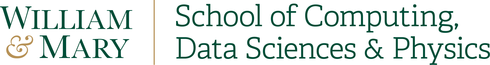
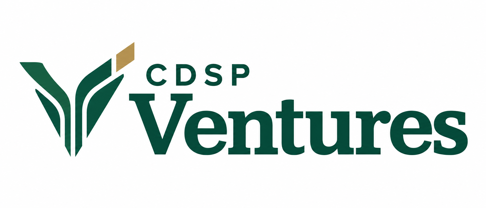

Learn
See how entrepreneurial thinking helps you identify a real need, test an assumption, and explain the value of your work.

Turn a question, a class project, or a research insight into something people can use.
Explore the showcaseFor students and faculty in W&M’s School of Computing, Data Sciences & Physics only.

CDSP Ventures is designed to connect students and faculty in the school with entrepreneurial thinking, people, and opportunities at W&M’s Entrepreneurship Hub.
Enter wherever you are. Find a useful next step.
See how entrepreneurial thinking helps you identify a real need, test an assumption, and explain the value of your work.
Explore connections with students, faculty, founders, alumni, and mentors. Find someone who can help you ask a better question or make a useful connection.
Explore a practical route into a prototype, a community project, a research application, or a new venture.
The idea is simple: bring our community together to explore entrepreneurial thinking, share experiences, and find a practical next step.
What need could your idea, project, or research address?
What can someone else’s attempts, questions, and lessons teach you?
Which Hub resource or opportunity fits what you want to try next?
Applied Science. Computer Science. Data Science. Physics.
Projects grow when people bring different skills to the same problem.
Explore an idea from class, meet a potential collaborator, or find a project where your skills can make a contribution. Start with a question or simply an interest in learning.
Explore who could use your research, connect a student project with a practical need, or meet people who can help you test an application beyond the lab.
Explore current offerings, find mentor connections, or ask the team where to begin.
Explore Hub opportunitiesOfferings, eligibility, and availability are set by the Hub.